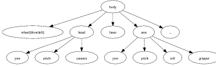
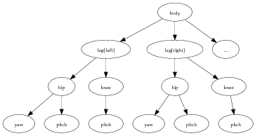
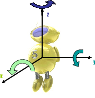
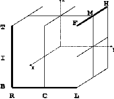
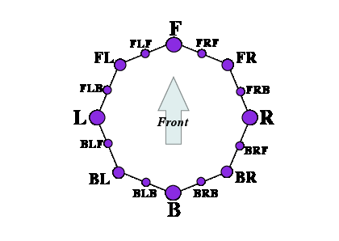

This section aims at clarifying the naming conventions in Urbi Engines for standard hardware/software devices and components implemented as UObject and the corresponding methods/attributes/events to access them. The list of available hardware types and software component is increasing and this document will be updated accordingly. Please contact the maintainers, should you be working on a component not described or closely related to one described here.
The hardware will be described as a set of components organized in a hierarchical structure called the structure tree. The relationship between a component and a sub-component in the tree is a ‘part-of’ inclusion relationship. From the point of view of Urbi, each component in the tree is an object, and it contains attributes pointing to its sub-components. Here is an example illustrating a part of a hierarchy that could be found with a wheeled robot with a gripper:

And here is another example for an humanoid robot:

The leaves of the tree are called devices, and they usually match physical devices in the hardware: motors, sensors, lights, camera, etc. Inside Urbi, the various objects corresponding to the tree components are accessed by following the path of objects inclusions, like in the example below (shortcuts will be described later):
The structure tree should not be mistaken for a representation of the kinematics chain. The kinematics chain is built from a subset of the devices corresponding to motor devices, and it represents spatial connections between them. Except for these motor devices, the structure tree components do not have a direct counterpart in the kinematics chain, or, if they do, it is as a subset of the kinematics chain (for example, leg[right] is a subset of the whole kinematics chain).
The goal of this standard is to provide guidelines on how to define the components and the structure tree, knowing the kinematics chain.
In many cases, it will be necessary to refer to an absolute frame of reference attached to the hardware. To avoid ambiguities, the standard frame of reference will have the following definition:

The axes are oriented in a counter-clockwise direction, as depicted in the illustration above.
Each component A, which is a sub-component of component B has a name, distinct from the name of all the other components at the same level. This name is a generic designation of what A represents, such as “leg” ,“head”, or “finger”.
Using the correct name for each component is a critical part of this standard. No formal rule can be given to find this name for any possible hardware configuration. However, this document includes a table covering many different possible cases. We recommend that manufacturers pick from this table the name that fits the most the description of their component.
When two identical components A1 and A2, such as the two legs of an humanoid robots, are present in the same sub-component B, an extra node is inserted in the hierarchy to differentiate them. This node is of the Localizer type, and provides a [] operator, taking a Localization argument, used to access each of the identical sub-components. The Urbi SDK provides an implementation for the Localizer and Localization classes. When possible, localization should be simple geometrical qualifier like right/center/left, front/middle/back or up/in-between/down. Note that “right” or “front” are understood here from the point of view of a man standing and looking in the direction of the X-axis of the machine, and up/pown matches the Z-axis, as depicted in the figure below:

Several geometric qualifiers can be used at the same time to further refine the position. In this case, multiple Localizer nodes are used. As a convention, height information (U/I/D) comes first, followed by depth information (F/M/H), and then side information (R/C/L).
// Front-left wheel of a four-wheeled robot:
robot.body.wheel[front][left];
// Front laser of a robot equipped with multiple sonars:
robot.body.laser[front];
// Left camera from a robot with a stereo camera at the end of an arm:
robot.body.arm.camera[left];
// Top-left LED of the left eye.
robot.body.head.eye[left].led[up][left].val = 1;
// Touch sensor at the end of the front-left leg of a four-legged robot:
robot.body.leg[front][left].foot.touch;
You can further qualify a side+depth localization with an additional F/B side information. This can be used in the typical layout below:

This dual positioning using side+depth can also be used to combine side+height or height+depth information.
Layouts with a sequence of three or more identical components can use numbers as their Localization, starting from 0. The smaller the number, the closer to the front, up, or left. For instance, an insectoid robot with 3 legs on each side will use robot.body.leg[left][0] to address the frontleft leg.
Layouts with identical components arranged in a circle can also use numeric localization. The component with index 0 should be the uppermost, or front-most if non applicable. Index should increase counterclockwise.
Some components like spines or tails are highly articulated with a set of identical sub-components. When talking about these sub-components, the above localization should be replaced by an array with a numbering starting at 0. The smaller the number, the closer the sub-component is to the robot main body. For surface-like sub-components, like skin touch sensors, the array can be two dimensional.
Other possible localization for sensors are the X, Y and Z axis themselves, like for example for an accelerometer or a gyro sensor, available in each of the three directions.
Examples of component names including localization:
leg[right], leg[left];
finger[right], finger[center], finger[left]; // three-finger hand
joint[0], joint[1] ... joint[5] // from tail
touch[478][124] // from skin
accel[x], accel[y], accel[z]; // typical accelerometer
gyro[x], gyro[y], gyro[z]; // typical gyro sensor
An interface describes some aspects of a type of device, by specifying the slots and methods that implementations must provide. Each child node of the component hierarchy should implement at least one interface.
For example, for a joint, we can have a “Swivel” interface, used to define patella joints. For the robot body itself, we have a Interface.Mobile interface describing mobile robots, which includes some standard way of requesting a move forward, a turn, etc.
In short, interfaces are standard Urbi objects that components can inherit from to declare that they have some functionalities.
The following pages describe a few of the most standard interfaces. Each device in the component hierarchy which falls within the category of an interface should implement it.
Each interface defines slots, which can be functions, events or plain data. Some of those slots are optional.
The AudioIn interface groups every information relative to microphones.
The content is the sound heard by the microphone since the last update event.
The AudioOut interface groups every information relative to speakers.
Speakers are write-only devices, so there is not much sense in reading the content of this attribute. At best, it returns the remaining sound to be played if it is not over yet, but this is not a requirement.
Power source of any kind.
Ball detectors, marker detectors and various feature-based detectors should all share a similar interface. They extract a part of the image that fits some criteria and define a blob accordingly. Here are the typical slots expected:
Information about the hardware.
Simple uni-color Led.
Subclass of Interface.Led. Tri-color led.
Mobile robots all share this generic interface to provide high order level motion control capabilities.
The following set of functions will block until associated movement is finished. If a function of this set is called while an other is already running, the first call will be canceled: the movement will be interrupted and the call will return.
Many of the functions below take a position argument. This position is expressed as a subset of the six values x, y, z, rho, theta, phi.
In addition to the previous functions, one can directly set the target movement speed in all linear/angular directions using the 6 scalar variables xSpeed, ySpeed, zSpeed, yawSpeed, pitchSpeed, rollSpeed, or the variable speed which contains a list. Writing to one of those slots will abort any function in the blocking API.
Implementations should provide default reasonable values for speed in the slots defaultXSpeed, defaultYSpeed, defaultZSpeed, defaultYawSpeed, defaultPitchSpeed and defaultRollSpeed.
This interface is used to describe a generic motor controller.
Subclass of Interface.Motor. This interface is used to describe a linear motor controller.
A wheel can fall in this category, if the reported position is the distance traveled by a point at the surface of the wheel.
Subclass of Interface.Motor. Motor similar to Interface.LinearMotor, but controlled by its translation speed.
Subclass of Interface.Motor. This interface is used to describe a position-controlled rotational motor controller.
Subclass of Interface.Motor. Interface describing a motor similar to RotationalMotor controlled by its rotation speed.
Contains information about the network identification of the hardware.
This interface is used to describe a generic sensor.
Subclass of Interface.Sensor. This interface is used to describe an accelerometer.
Subclass of Interface.Sensor. This interface is used to describe a distance sensor (infrared, laser, ultrasonic…).
Subclass of Interface.Sensor. This interface is used to describe an gyrometer.
Subclass of Interface.Sensor. Interface for a scanning laser rangefinder, or other similar technologies.
Depending on the implementation, some of the parameters can be read-only, or can only accept a few possible values. In that case it is up to the implementer to select the closest possible value to what the user entered. It is the responsibility of the user to read the parameter after setting it to check what value will actually be used by the implementation.
Subclass of Interface.Sensor. This interface is used to describe a temperature sensor.
Subclass of Interface.Sensor. This interface is used to describe a touch pressure sensor (contact, induction, etc.).
Speech recognition allows to transform a stream of sound into a text using various speech recognition algorithms. Implementations should use the micro component as their default sound input.
Text to speech allows to read text using a speech synthesizer. Default implementations should use the speaker component (or alias) as their default sound output.
Camera-equipped machines can sometimes move the orientation of the field of view horizontally and vertically, which is a very important feature for many applications. In that case, this interface abstracts how such motion can be achieved, whether it is done with a pan/tilt camera or with whole body motion or a combination of both.
The VideoIn interface groups every information relative to cameras or any image sensor.
The image sensor is expected to use the cheapest way in term of CPU and/or energy consumption to produce images of the requested format. Implementations linked to a physical image sensor do not have to implement all the possible formats. In this case, the format closest to what was requested must be used. A generic image conversion object will be provided. In order to avoid duplicate image conversions when multiple unrelated behaviors need the same format, it is recommended that this object be instantiated in a slot of the VideoIn object named after the format it converts to:
if (!robot.body.head.camera.hasSlot("jpeg"))
{
var robot.body.head.camera.jpeg =
ImageConversion.new(robot.body.head.camera.getSlot("val"));
robot.body.head.camera.jpeg.format = 3;
}
Standard components correspond to components typically found in wheeled robots, humanoid or animaloid robots, or in industrial arms. This section provides a list of such components. Whenever possible, robots compatible with the Gostai Standard Robotics API should name all the components in the hierarchy using this list.
Note that Gostai Standard Robotics API considers the orientation to be a component name, and not a localizer. So one would write head.yaw and not head.joint[yaw] to refer to a rotational articulation of the head around the Z axis.
It is not always clear which rotational direction corresponds to the yaw, pitch or roll components (listed in the table below). This is a quick guideline to help determine the proper association.
Let us consider the robot in its resting, most prototypical position, like “standing” on two or four legs for a humanoid or animaloid, and let all members “naturally” fall under gravity. When gravity has no effect on a certain joint (because it is in the orthogonal plan to Z, for example), the medium position between rangemin and rangemax should be used. The body position achieved will be considered as a reference. Then for each component that is described in terms of yaw/pitch/roll sub-decomposition, the association will be as follow:
When there is no exact match with the X/Y/Z axis, the closest match, or the default remaining available axis, should be selected to determine the yaw/pitch/roll meaning.
The following table summarizes the currently referenced standard components, with a description of potential components that they could be sub-component of, a description of potential components they may contain, and a list of relevant interfaces. This table should be seen as a quick reference guide to identify available components in a given robot.
| Name | Description | Sub. of | Contains | Facets | |
| robot | The main component that represents an abstraction of the robot, and the root node of the whole component hierarchy. | body | Identity Network Mobile Tracker | ||
| body | The main component that contains every piece of hardware in the robot. This includes all primary kinematics sub-chains (arms, legs, neck, head, etc) and non-localized sensor arrays, typically body skin or heat detectors. Localized sensors, like fingertips touch sensors, will typically be found attached to the finger component they belong and not directly to the body. | robot | wheel arm leg neck head wheel tail skin torso … | ||
| wheel | Wheel attached to its parent component. | body | RotationalMotor | ||
| leg | Legs are found in humanoid or animaloid robots and correspond to part of the kinematics chain that are attached to the main body by one extremity only and which do touch the ground in normal operation mode (unlike arms). A typical configuration for humanoids contains a hip, a knee and an ankle. If the leg is more segmented, the leg can be described with a simple array of joints. | body | hip knee ankle foot joint | ||
| arm | Unlike legs, an arm’s extremity does not always touch the ground in normal operating mode. This applies to humanoid robots or single-arm industrial robots. Arms supersede legs in the nomenclature: if a body part behaves alternatively like an arm and like a leg, it will be considered as an arm. | body | shoulder elbow wrist hand grip joint | ||
| shoulder | The shoulder is the upper part of the arm. It can have one, two or three degrees of freedom and is the closest part of the arm relative to the body. | arm | yaw pitch roll | ||
| elbow | Separates the upper arm and the lower arm, this is usually a single rotational axis. | arm | pitch | ||
| wrist | Connects the hand and the lower part of the arm. Usually three degrees of freedom axis. | arm | yaw pitch roll | ||
| hand | The hand is an extension of the arm that usually holds fingers. It’s not the wrist, which is articulated and between the arm and the hand. | arm | finger | ||
| finger | A series of articulated motors at the extremity of the arm, and connected to the hand. Fingers are usually localized with arrays and/or lateral localization respective to the hand. | hand | touch | Motor | |
| grip | Simple two-fingers system. | arm hand | touch | Motor | |
| hip | The hip is the upper part of the leg and connects it to the main body. It can have one, two or three degrees of freedom. | leg | yaw pitch roll | ||
| knee | Separates the upper leg and the lower leg, this is usually a single rotational axis. | leg | pitch | ||
| ankle | Connects the foot and the lower part of the leg. Usually three degrees of freedom axis. | leg | yaw pitch roll | ||
| foot | The foot is an extension of the leg that usually holds toes. It’s not the ankle, which is articulated and between the leg and the foot. The foot can also contain touch sensors in simple configurations. | leg | touch | ||
| toe | Like fingers, but attached to a foot. | foot | touch | Motor | |
| neck | The neck corresponds to a degree of freedom not part of the head, but relative to the rigid connection between the head and the main body. | body | yaw pitch roll | ||
| tail | A series of articulated motors at the back of the robot. | body | joint | ||
| head | The head main pivotal axis. | body neck | camera mouth ear lip eye eyebrow | ||
| mouth | The robot mouth (open/close). | head | lip | Motor | |
| ear | Ears may have degrees of freedom in certain robots. | head | Motor | ||
| joint | Generic articulation in the robot. | tail arm leg lip | Motor | ||
| yaw | Rotational articulation around the Z axis in the robot. See Section 23.6.1. | body neck knee ankle shoulder elbow wrist torso | RotationalMotor RotationalSpeedMotor | ||
| pitch | Rotational articulation around the Y axis in the robot. See Section 23.6.1. | body neck knee ankle shoulder elbow wrist torso | RotationalMotor RotationalSpeedMotor | ||
| roll | Rotational articulation around the X axis in the robot. See Section 23.6.1. | body neck knee ankle shoulder elbow wrist torso | RotationalMotor RotationalSpeedMotor | ||
| x | Translational movement along the X axis. | body arm | LinearMotor LinearSpeedMotor | ||
| y | Translational movement along the Y axis. | body arm | LinearMotor LinearSpeedMotor | ||
| z | Translational movement along the Z axis. | body arm | LinearMotor LinearSpeedMotor | ||
| lip | Corresponds to animated lips. | mouth | joint | Motor | |
| eye | Corresponds to the eyeball pivotal axis. | head | camera | ||
| eyebrow | Some robots will have eyebrows with generally one or several degrees of freedom. | head | joint | Motor | |
| torso | This corresponds to a pivotal or rotational axis in the middle of the main body. | body | yaw pitch roll | ||
| spine | This is a more elaborated version of “torso”, with a series of articulations to give several degrees of freedom in the back of the robot. | torso | joint | ||
| clavicle | This is not to be mixed up with the “top of the arm” body part. It is an independent degree of freedom that can be used to bring the two arms closer in a sort of “shoulder raising” movement. | body | Motor | ||
| touch | Touch sensor. | finger grip foot toe | TouchSensor | ||
| gyro | Gyrometer sensor. | body | GyroSensor | ||
| accel | Accelerometer sensor. | body | AccelerationSensor | ||
| camera | Camera sensor. If several cameras are available, localization shall apply; however there must always be an alias from camera to one of the effective cameras (like cameraR or cameraL). | head body | VideoIn | ||
| speaker | Speaker device. If several speakers are available, localization shall apply; however there must always be an alias from speaker to one of the effective speakers (like speakerR or speakerL). | head body | AudioOut | ||
| micro | Microphone devices. If several microphones are available, localization shall apply; however there must always be an alias from micro to one of the effective microphones (like microR or microL). | head body | AudioIn | ||
| speech | Speech recognition component. | robot | SpeechRecognizer | ||
| voice | Voice synthesis component. | robot | TextToSpeech | ||
Components are usually identified with their full-length name, which is the path to access them inside the structure tree. For convenience and backward compatibility with pre-2.0 versions of Urbi, there is also a compact notation available. We will describe here how to construct the compact notation starting from the full name and the structure tree.
| Full name | Compact name |
| robot.body.armR.elbow | elbowR |
| robot.body.head.yaw | headYaw |
| robot.body.legL.knee.pitch | kneeL |
| robot.body.armR.hand.finger[3][2] | fingerR[3][2] |
| robot.body.armL.hand.fingerR | fingerLR |
The rule is to move every localization qualifier at the end of the compact notation, in the order where they appear in the full-length name. The remaining component names should then be considered one by one to see if they are needed to remove ambiguities. If they are not, like typically the robot or body components which are shared with almost every other full-length name, they can be ignored. If finally several component names have to be kept, they should be separated by using upper case letters for the first character instead of a dot, like in Java-style notation.
Some detailed examples:
The Urbi SDK provides a few support urbiscript classes to help you build the component hierarchy. You can access to those classes by including the files ‘urbi/naming-standard.u’ and ‘urbi/component.h’.
The Interface class contains urbiscript objects for all the interfaces defined in this document. Implementations must inherit from the correct interface.
// Instantiate a camera.
var cam = myCamera.new();
// Make it inherit from VideoIn.
cam.addProto(Interface.VideoIn);
The Interface.interfaces method can be called to get a list of all the interfaces an object implements.
This class can be used to create intermediate nodes of the hierarchy. It provides the following methods:
The Localizer class is a special type of Component that stores other components based on their localization. It provides a ’[]’ operator that takes a Localization, such as top,left,front, and that can be used to set and get the Component or device associated with that Localization.
Note that the ’[]’ function is using a mechanism to automatically look for its argument as a slot of Localizer. As a consequence, you cannot pass a variable to this function, but only one of the constant Localization. To pass a variable, use the get(loc) or the set(loc, value) function.
The following example illustrates a typical instantiation sequence.
// Create the top-level node.
var Global.robot = Component.new("robot");
robot.addComponent("head");
var cam = MyCamera.new;
cam.addProto(Interface.VideoIn);
robot.head.addDevice("camera", cam);
// Add two wheels.
robot.addComponent(Localizer.new("wheel"));
robot.wheel[left] = MyWheel.new(0).addProto(Interface.RotationalMotor);
robot.wheel[right] = MyWheel.new(1).addProto(Interface.RotationalMotor);
// Implement the Mobile facet in urbiscript.
function robot.go (d)
{
robot.wheel.val = robot.wheel.val + d / wheelRadius adaptive:1
};
function robot.turn(r)
{
var v = r * wheelDistance / wheelRadius;
robot.wheel[left].val = robot.wheel[left].val + v adaptive:1 &
robot.wheel[right].val = robot.wheel[right].val - v adaptive:1
};
robot.addProto(Interface.Mobile);
robot.makeCompactNames;
// Let us see the result.
robot.flatDump;
[00010130] *** Mobile: robot
[00010130] *** RotationalMotor: wheelL wheelR
[00010130] *** VideoIn: camera